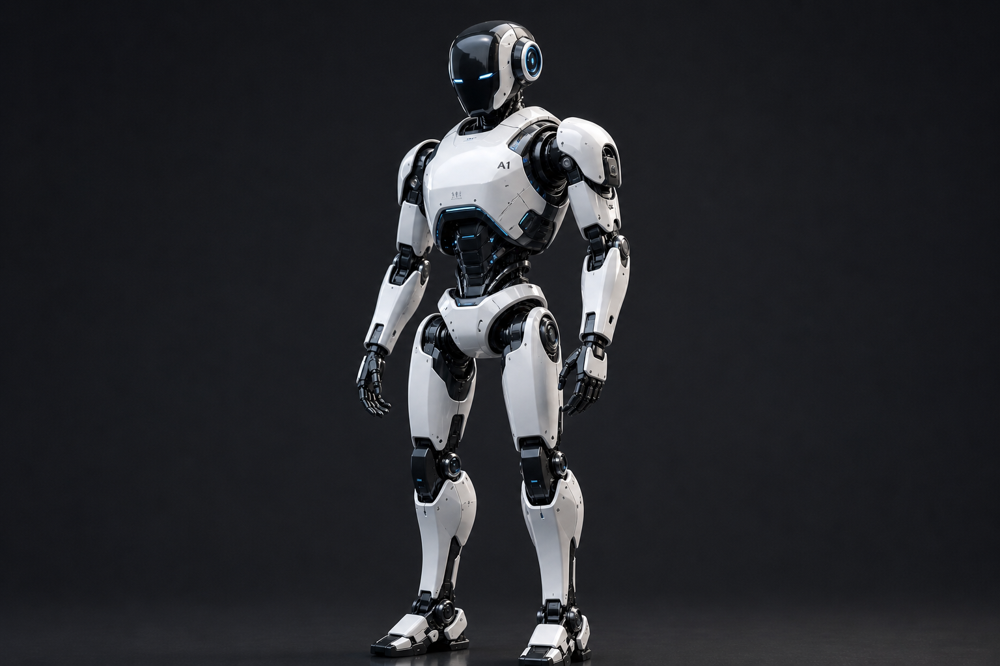

O que é Inteligência Artificial?
A Inteligência Artificial (IA) é um ramo da tecnologia que permite que máquinas aprendam, pensem e tomem decisões de forma semelhante aos seres humanos. Ela utiliza algoritmos, dados e modelos matemáticos para resolver problemas complexos.

Como a IA funciona?
A IA funciona por meio de técnicas como aprendizado de máquina (Machine Learning) e redes neurais. Esses sistemas analisam grandes quantidades de dados para identificar padrões e melhorar seu desempenho ao longo do tempo.

Onde a IA é usada?
A IA está presente em diversos lugares: assistentes virtuais, carros autônomos, recomendações de filmes, medicina, jogos e muito mais. Ela está transformando a forma como vivemos e trabalhamos.

O futuro da IA
O futuro da IA promete avanços incríveis, com máquinas cada vez mais inteligentes e integradas ao nosso dia a dia. Porém, também levanta questões éticas importantes sobre privacidade, emprego e controle tecnológico.